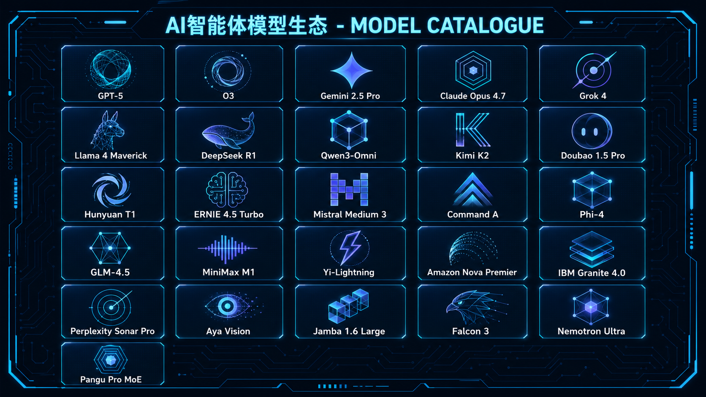

过去十年，AI 学会了像人一样交谈；现在，PowerMatrix 赋予它改变物理世界的权限。我们的使命，是终结无穷尽的对话框，击穿 AI 与生活的最后 1 厘米——让智慧止于思考，始于执行。
From Conversational AI to Agentic Action.
PowerMatrix 是一家面向企业的 AI Agent 咨询、部署、增长与本地化终端一站式服务商。
我们帮助企业把 AI 从零散工具转化为可部署、可运营、可增长、可交付的业务系统，覆盖 AI 企业咨询、OpenClaw / 龙虾部署、流量增长 Skill、GEO 优化、企业知识库、AI 客服、定制化 Skill 与本地 AI 终端部署等场景。
PowerMatrix 不只是帮助企业“使用 AI”，而是帮助企业建立自己的 AI Agent 工作系统，让 AI 真正进入销售、客服、内容、获客、运营和管理流程，成为企业持续降本增效与增长的基础设施。
先让 AI 产生可验证的降本、增效、获客和增长结果，再逐步扩展到更多业务流程。
真正的技术革命，是让交互界面消失。
OpenClaw 颠覆了"打开后台、键入 Prompt"的旧石器范式。它潜伏于微信、飞书及您的协作关系中，通过极致的拟人化感知，将跨平台调度简化为一句话的托付。
这不再是对话。这是授权。
旧范式 · 后台迷宫
新范式 · 一句话闭环
告别后台迷宫，微信即中控。无需培训，无需部署经验，开箱即用。
7×24h 待命，无界协作。数字员工永不请假，永不疲劳，毫秒级唤醒。
如同与最默契的助理共事。理解上下文，记住偏好，主动汇报进度。
OpenClaw 是大脑，Skill 即为其连接万物的神经与肌肉。
它不是死板的代码插件，而是被蒸馏后的执行基因。通过排列组合 Skill，AI 得以完成跨平台的精密"连招"。
像人一样检索、甄别并抓取全网流动数据。实时监控行业动态、竞品信息与市场信号，信息差永不存在。
模拟触碰与点击，击穿软件间的数据高墙。从 CRM 到 ERP，任何界面皆可操控，数据孤岛彻底消除。
自动化读写与结构转换，终结机械劳动。Excel、Word、PDF、数据库一键互通，报告自动生成。
针对小红书、抖音等平台的生成式引擎优化方案。从关键词策略、爆款选题生成到内容分发执行，一站定制品牌社交搜索占位能力。
我们交付的不是软件，而是属于企业的智能基础设施。通过私有化部署 OpenClaw 与专属 Skill 矩阵，让 AI 从"陪聊"进化为"能干活"的核心资产。
蒸馏复杂流程，打造永不疲劳、毫秒级响应的数字员工集群。让重复性工作彻底从人类日程中消失。
本地化封装部署，数据永不出域，让商业秘密在绝对安全的环境中变现。符合等保、GDPR 及行业合规要求。
一次买断式交付，彻底告别 Token 计费焦虑与持续运维负担。规模扩大 10 倍，成本增量趋近于零。
这是 PowerMatrix 首款面向政府与关键行业的 AI 智能终端，它不仅是一台机器，更是您私有域内的智能安全边界。
我们将 OpenClaw 核心引擎、经严格筛选的企业级 Skill 矩阵，以及全球顶尖的开源大模型，完整封装于这台物理设备之中。数据绝不出域，Token 成本归零。无需连接外网，无需上传数据，一切智慧的产生与执行皆在您完全掌控的方寸之间闭环。
顶尖的开源模型不应只是实验室里的标本。OpenClaw 支持灵活的热插拔式换脑，借助 PowerMatrix 的分布式调度，让每个个体与企业都能以极低成本，驾驭全球顶级的模型算力。

加入进化，定义您的第一批数字部署。
理解体验最新模型从 PowerMatrix 的定位、OpenClaw / 龙虾部署，到 GEO 优化、本地终端和定制化 Skill，这里集中回答企业在开始前最常见的问题。
PowerMatrix 是一家面向企业的 AI Agent 咨询、部署、增长与本地化终端一站式服务商。
我们帮助企业把 AI 从零散工具，转化为可部署、可运营、可增长、可交付的业务系统，覆盖 AI 企业咨询、OpenClaw / 龙虾部署、GEO 优化、内容增长、AI 客服、企业知识库、本地 AI 终端和定制化 Skill 等场景。
简单来说，PowerMatrix 不是单纯卖 AI 工具，而是帮助企业真正把 AI 用起来、跑起来、沉淀下来。
PowerMatrix 主要解决企业 AI 落地过程中的四类问题：不知道哪些业务场景适合用 AI；试用了很多 AI 工具但无法进入真实业务流程；缺少统一的 AI 工作系统，知识和经验无法沉淀；希望通过 AI 提升获客、客服、内容生产和内部效率，但缺少可执行方案。
PowerMatrix 会从业务诊断开始，帮助企业找到最适合先落地的 AI 场景，并完成方案设计、系统部署、员工培训和持续运营。
普通 AI 工具通常只是一个对话窗口，适合个人临时提问、写作或整理资料。
PowerMatrix 提供的是企业级 AI Agent 落地方案。我们关注的不只是“AI 能回答什么”，而是 AI 能否真正进入企业的销售、客服、内容、获客、运营和管理流程。
PowerMatrix 的核心差异在于企业 AI 咨询、OpenClaw / 龙虾部署、业务 Skill 定制、GEO 与内容增长、本地 AI 终端部署、员工培训与持续运营能力。
OpenClaw，也被称为“龙虾”，是一类 AI Agent 执行引擎。它不同于普通聊天机器人，更强调执行能力，可以承载企业知识库、业务流程、自动化任务和定制 Skill。
在 PowerMatrix 的服务体系中，OpenClaw / 龙虾可以被理解为企业 AI 工作站的核心引擎，帮助企业把 AI 能力接入内容生产、客户沟通、资料整理、流程执行和业务分析等具体场景。
AI Agent 可以理解为具备一定任务理解、执行和协作能力的 AI 工作助手。传统 AI 工具更多是“你问一句，它答一句”，而 AI Agent 更接近一个可以围绕目标持续工作的数字员工。
企业需要 AI Agent，是因为未来的 AI 价值不只来自聊天，而来自执行。例如自动生成并优化营销内容、辅助客户回复、整理企业资料、生成分析报告和协助员工完成重复性工作。
“流量为王”是 PowerMatrix 面向企业获客与内容增长场景设计的 AI Skill 套餐，主要包括小红书运营 Skill、抖音运营 Skill、GEO 优化 Skill、GEO 内容生成与分发、品牌母库内容搭建、个人微信 AI 客服、评论管理与潜在客户互动、私信管理与线索承接。
这个套餐的目标不是简单帮企业写几篇文章，而是帮助企业建立一套可持续运行的 AI 内容增长系统。
GEO 是 Generative Engine Optimization 的缩写，可以理解为生成式引擎优化。过去企业重视 SEO，是为了让用户在搜索引擎中找到自己；现在，越来越多用户开始直接向 AI 工具提问。
PowerMatrix 的 GEO 优化服务，会帮助企业建设适合 AI 理解的内容体系，包括官网 FAQ、知乎问答、行业文章、客户案例、品牌资料库和结构化介绍内容，从而提升企业在 AI 搜索和大模型回答中的可见度。
GEO 优化尤其适合需要通过搜索和内容获客、行业解释成本较高、希望在 AI 搜索结果中建立品牌认知，或正在做官网、知乎、公众号、小红书、抖音内容矩阵的企业。
如果客户在选择服务前会大量搜索、比较、询问 AI，那么这个行业就有做 GEO 优化的价值。
PowerMatrix 希望帮助中小企业获得四类实际价值：通过 AI 客服、知识库和自动化流程降本；让员工更快完成内容生产、资料整理、客户回复、方案撰写和业务分析；通过内容与 GEO 提高品牌曝光与线索转化；把分散的企业知识转化为可复用的 AI 资产。
不是。PowerMatrix 的服务对象不局限于科技公司，我们更关注传统企业、中小企业和本地服务型企业的 AI 落地需求。
餐饮、文旅、教育培训、医美、制造、贸易、本地生活服务、企业咨询、专业服务机构等，都可以通过 AI Agent 实现内容增长、客户承接、内部知识管理和业务流程提效。
可以。PowerMatrix 的价值之一，就是帮助没有技术团队的企业完成 AI 落地。
企业不需要自己研究模型部署、Prompt 编写、接口调用、Agent 配置或自动化流程。PowerMatrix 会根据企业需求，提供从诊断、方案、部署到培训的一站式服务。
提供。对于重视数据安全、客户隐私和内部资料管理的企业，PowerMatrix 可以提供本地 AI 终端部署方案。
企业可以选择将 OpenClaw / 龙虾工作站部署在本地服务器、Mac mini、迷你主机或其他企业自有硬件环境中。
本地 AI 终端部署可以让数据更可控、权限更清晰、业务流程更稳定，并让企业知识库长期沉淀。它也适合承载定制化 AI Agent 和内部自动化任务，减少企业对员工个人 AI 账号和零散工具的依赖。
可以。PowerMatrix 支持根据企业的行业特点、产品资料、销售流程、客服问答、SOP 文档和历史业务数据，定制专属 AI Skill。
例如企业知识库 Skill、销售线索承接 Skill、AI 客服 Skill、小红书内容运营 Skill、抖音内容运营 Skill、GEO 内容生成 Skill、行业资料分析 Skill、员工培训助手和经营数据分析 Skill。
PowerMatrix 通常采用五步服务流程：业务诊断、场景选择、方案设计、系统部署、培训与运营。我们会先了解企业当前业务、团队情况、增长目标和 AI 使用基础，再找到最适合优先落地的 AI 场景。
对于多数中小企业，PowerMatrix 建议先用 30 天跑通一个真实业务场景。这个场景可以是 AI 客服、企业知识库、小红书内容运营、抖音内容运营、GEO 可见度优化、销售线索自动承接或本地 AI 工作站部署。
PowerMatrix 的目标不是简单替代员工，而是帮助员工提升效率，并帮助企业沉淀组织能力。
AI 更适合处理重复性、标准化、资料型和辅助决策类工作。真正需要人判断、沟通、管理和负责的部分，仍然需要企业团队完成。